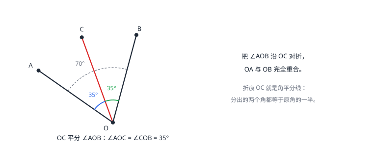

角与角平分线
角由公共端点的两条射线组成，量的是「张开多少」而不是边画多长。度分秒是 60 进制。互余、互补只看两角之和；角平分线把角分成相等的两份。同角（等角）的余角相等、补角相等，是第一批可以真正「推出来」的结论。
| 所属主题 | 图形的初步认识 |
|---|---|
| 所属模块 | 几何 |
| 课标学段 | 第四学段（7~9 年级） |
| 前置知识 | 直线、射线、线段 |
| 核心素养 | 几何直观运算能力 |
教材定位
人民教育出版社《人教版（2024版）义务教育教科书·数学》
七年级上册第6章 几何图形初步6.3 角
对应七上 6.3：角的概念、角的比较与运算、余角和补角。角平分线在 15.3 等腰三角形中再次出现，本篇讲的是它的度量与定义基础。
说明
角由有公共端点的两条射线组成，公共端点是顶点，两条射线是边。它量的是「张开多少度」：把周角等分成 360 份，每一份是 1°；直角 90°、平角 180°、周角 360° 都从这里定义。角的大小与边画多长无关——边是射线，无限长，图上画的只是示意。表示法有三种：三个大写字母（顶点放中间，∠AOB）、一个大写字母（顶点处只有一个角时才能用 ∠O）、数字或希腊字母（图上标了记号的）。
度量单位度、分、秒是 60 进制：1°=60′，1′=60″。两个角的关系只看和：和为 90° 叫互余，和为 180° 叫互补，与它们的位置无关。角平分线是从顶点出发、把角分成相等的两份的射线：OC 平分 ∠AOB，则 ∠AOC=∠COB=∠AOB 的一半。
方位角是航海、测绘里表示方向的标准语言：以观测点为中心，先说南或北、再说偏东或偏西、最后说角度，如「北偏东 30°」指从正北方向顺时针（向东）转 30° 的射线方向。四个正方向（北、南、东、西）之间的夹角都是 90°，故「北偏东 30°」与「东偏北 60°」是同一个方向——两种说法互换时，与 90° 互补。
使用场景
方位与方向类问题全是角的计算：南偏东 35° 说的是「从正南往东转 35°」；两个人互相看对方，方向恰好相反（我看你是南偏东，你看我就是北偏西同一角度）。钟表问题里，分针每分钟转 360°÷60=6°，时针每分钟 30°÷60=0.5°，夹角就是两针各自转过的角度之差。
旋转与折叠类问题用「净转角」思考：先顺时针 125° 再逆时针 80°，等于净顺时针 45°——把两次转动代数相加即可。折叠问题里折痕天然是角平分线：对折使两边重合，就是「平分」的操作定义。
注意点
度分秒换算是 60 进制，不是 100 进制：0.5°=30′（不是 50′）；加法逢 60′ 进 1°，减法借 1° 当 60′。0.3°=18′、0.25°=15′ 这几个高频值要熟。
用单字母 ∠O 表示角的前提是顶点处只有一个角；图上一个顶点引出好几条射线时必须用三个字母，把顶点放中间，否则指代不清。互余、互补的两个角不必相邻挨着，只要度数和分别是 90°、180° 就行。
证明

图 1：∠AOB=70°，OC 平分它，分出的两个角各 35°。对折使两边重合，折痕就是角平分线
证明
结论 1角的大小只由两条射线张开的程度决定，与边画多长无关。
角的大小为什么与边长无关：角的两边是射线，本来就无限长，图上画出的一小段只是示意。用量角器量同一个角，把两边画长些、画短些再量，读数不变——量的始终是两条射线张开的程度。（图 1 右侧是对折的示意）
关键一步依据是角的概念本身：角由有公共端点的两条射线组成，射线向一个方向无限延伸，图上那一小段只是画法示意。所以「边长」根本不是这个角的变量，把两边画长画短改的只是图形，两次量到的始终是同一对射线张开的程度。
结论 2同角（等角）的余角相等；同角（等角）的补角也相等。
「同角（等角）的余角相等」可以推出来：设 ∠2 与 ∠3 都是 ∠1 的余角，那么 ∠1+∠2=90° 且 ∠1+∠3=90°。两个等式的两边都减去 ∠1，得 ∠2=90°−∠1=∠3。补角的版本把 90° 换成 180°，证法一字不差。
关键一步依据是等式的性质：等式两边同时减去同一个数，等式仍然成立，这一步保证两个等式消去同一个 ∠1 之后还能比较。余角、互补的定义给出那两个等式（和为 90°、和为 180°），而「同一个 ∠1」正是两边能消去同一个量的前提。补角版本把 90° 换成 180°，证法一字不差。
结论 3角平分线上的射线把角分成相等的两份，每份是原角的一半。
角平分线的「平分」就是「分成相等的两份」：对折使角的两边重合，折痕两侧的角处处相等，每份是原角的一半。这是操作定义，也是后面用尺规把它作出来的依据。
关键一步依据是角平分线的定义：它是把角分成相等的两份的射线，「相等的两份」就是「平分」的意思，每份是原角的一半则是「分成相等的两份」的直接结果。对折时两边重合、折痕两侧的角处处相等，是把这份相等落到可操作动作上的验证，也是后面尺规作图能照搬的依据。
动手实验
画一个 52° 的角，请两个人分别画出它的余角，量出来都等于 38°（52+38=90）；再画一个 75° 的角，余角都是 15°。换谁都一样——因为「余角」本来就是从 90° 里减出来的，减法人人相同。把一个 70° 的角纸片对折，量折痕两侧的角，各 35°。
解题思路
度分秒运算按位处理：加法先加分（23′+57′=80′=1°20′，向度进位），再算度；减法不够减就借（87°−29°34′ 写成 86°60′−29°34′=57°26′）。乘除把每一位单独算再整理。检查答案时估算：结果的位数应该和原始数据接近。
文字关系题设未知角列方程：设这个角为 x，则余角是 90−x、补角是 180−x。「一个角的补角比它的余角的 3 倍少 10°」翻译成 180−x=3(90−x)−10，解得 x=40°——余角 50°、补角 140°，代回检验 3×50−10=140 成立。已知角求它的余角补角、已知关系反求角，全是这一套翻译。
按场景的例题
例 1（场景：测量与工程） 台风方位的相互描述
台风中心位于观测站的南偏东 35° 方向。从台风中心看观测站，是什么方向？
解：方向是相对的：观测站看台风是「向正南走、再向东偏 35°」。反过来从台风看观测站，行进方向整个倒过来：向正北、再向西偏 35°，即北偏西 35°。两个方向角相等、南北东西互换。
答：北偏西 35°。
例 2（场景：图形设计） 折纸图案的等分角
把一张纸上 70° 的角对折，使角的两边重合。展开后折痕把角分成了两个多少度的角？若再把其中一个角对折一次，得到多大的角？
解：对折使两边重合，折痕就是角平分线：70°÷2=35°，两个角各 35°。再把 35° 的角对折：35°÷2=17.5°。验算：17.5°×4=70°，两次对折把原角四等分。
答：第一次对折得两个 35° 的角；第二次对折得 17.5° 的角。
例 3（场景：物理情境） 巡检机器人的累计转向
巡检机器人面朝正北，先顺时针转 125°，再逆时针转 80°。它最终面朝哪个方向？净转过多少度？
解：两次转向代数相加：顺时针记正、逆时针记负，+125−80=+45，即净顺时针 45°。从正北出发顺时针 45°，落在北与东的正中间，即北偏东 45°（东北方向）。
答：最终朝北偏东 45°，净顺时针转 45°。
常用推论
同角（等角）的余角相等、补角相等——第一批由等式性质推出的几何结论，后面相交线的推导反复用它。
一个角的补角比它的余角大 90°（180−x 比 90−x 恰多 90）。
分针每分钟转 6°，时针每分钟转 0.5°，每分钟分针比时针多转 5.5°——钟面夹角问题的两个基本速度。
方位角在九下解直角三角形的应用里大量出现（仰角俯角、航行问题），画图时先定观测点、画十字方向标、再按角度量射线，是贯穿三年的统一画图习惯。
易错点
错0.5° 换算成 50′。
为什么错度分秒是 60 进制，0.5° 是 1° 的一半，等于 30′。当成 100 进制就会算出 50′。
正确0.5°=30′，0.25°=15′，0.3°=18′。
错把角平分线说成「线段」。
为什么错角平分线从顶点出发把角分成相等的两份，向角内无限延伸，是射线。图上只画了一小段是示意。
正确角平分线是射线；描述时说「从顶点出发」。
错认为互余的两个角必须拼在一起（相邻）。
为什么错互余只规定度数和为 90°，与两个角摆在哪儿无关；拼成直角只是常见画法。
正确只要 ∠A+∠B=90°，不管位置，两角就互余。
直观理解
角量的是「张开程度」，像折扇：扇骨画多长不重要，开合的角度才是本质。所以画角的边长一点短一点都不影响大小；「度」是转动的刻度——把一圈切成 360 份。折纸是对付角最趁手的工具：折痕天然平分角，因为「对折重合」就是「相等」的操作版。